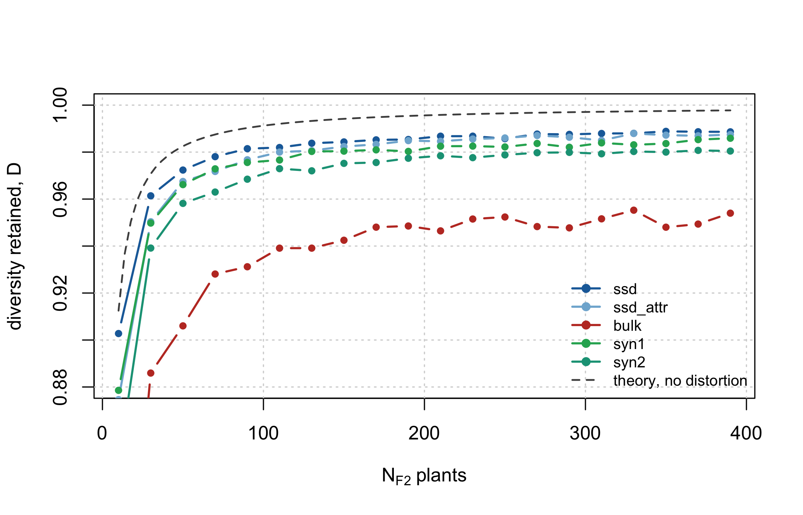
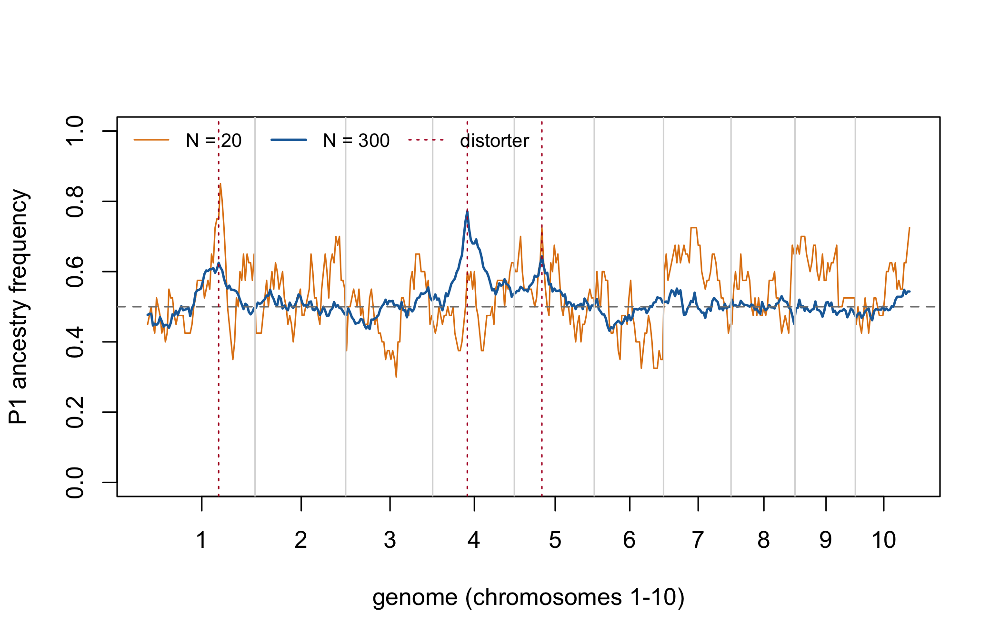
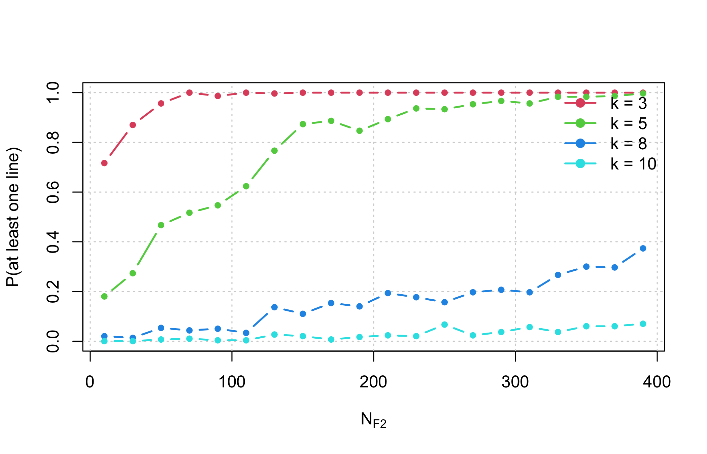

map <- build_map(maize_chr_len, spacing_cM = 2)
c(chromosomes = length(map$chr_len), markers = map$m,
total_cM = map$total_cM, morgans = map$total_cM / 100)
#> chromosomes markers total_cM morgans
#> 10.0 846.0 1670.0 16.74 Sizing a segregating population, F1 to F4
The previous chapters took the candidate pool as given. This one asks where it comes from: a wide cross between two divergent parents, carried F1 -> F2 -> F3 -> F4, and the question every programme has to answer before it plants anything – how many plants?
The answer turns out to depend entirely on what you are sizing for. There is no single optimal \(N\), and the most common failure is to size for the objective that saturates earliest and then be surprised when a different objective was never met.
4.1 The simulated space is ancestry, not alleles
Each genome position is coded 0 (from parent P1) or 1 (from parent P2). For a wide biparental cross between two divergent heterotic groups this is the correct abstraction: essentially every locus polymorphic between the parents is biallelic, so ancestry is a sufficient statistic. Throughout this chapter, “allele frequency” means “frequency of P1 ancestry”.
4.2 The assumptions, one at a time
These are the assumptions the numbers rest on. Read them before trusting any of the numbers.
P1. Ancestry, not alleles. As above.
P2. Parents fully homozygous and fixed for alternative alleles. Consequently every F1 plant is genetically identical and the genetic \(N_e\) of the F1 is 1. Sizing the F1 is a logistical decision, not a genetic one – unless the parents carry residual heterozygosity, which is handled separately below.
P3. The genetic map. Ten chromosomes, lengths from a classical composite maize map, about 1670 cM (~17 Morgans). Do not use IBM-type map lengths from intermated RILs: they are inflated 5-10x by construction and will make every answer wrong.
P4. Haldane recombination, no interference, identical in male and female. The probability of a haplotype switch between adjacent markers \(d\) cM apart is \(r = 0.5(1 - e^{-2d/100})\); the first marker of each chromosome gets \(r = 0.5\), which produces independent segregation between chromosomes automatically.
Limitation: without interference the variance in crossover number is inflated (Poisson). Maize has strong positive interference, so the simulated block-length distribution has a slightly longer tail than reality. Mean block lengths and allele frequencies are unaffected.
P5. Segregation distortion by rejection sampling, therefore exact rather than approximate. Two mechanisms: gametophytic (ga1/Ga1-s type, pollen incompatibility) acting only on the male gamete, and zygotic (hybrid lethality or subvitality) as genotype fitnesses. Because rejection acts on the whole gamete, the region linked to the distorter is dragged along – which is exactly the phenomenon of interest.
f2_distorters| chr | pos_cM | type | k | w00 | w01 | w11 | label |
|---|---|---|---|---|---|---|---|
| 4 | 75 | gametic | 0.80 | NA | NA | NA | ga1-like (4.05) |
| 1 | 160 | zygotic | NA | 1 | 1 | 0.45 | partial lethal (1.10) |
| 5 | 60 | gametic | 0.68 | NA | NA | NA | weak gametic (5.03) |
WarningThe distorters are plausible, not measured
This is the parameter that moves the results most. Replace f2_distorters with your own F2 genotyping data before using any number here to decide field area.
P6. Five schemes, all ending with \(H = 0.125\) so they are directly comparable: ssd (one seed per plant per generation – the neutral reference, no selection, no drift beyond the meiotic), ssd_attr (SSD with 15% random loss per generation: vigour, partial sterility, flowering asynchrony – common in wide crosses with exotic material), bulk (differential seed contribution, a Wright-Fisher model with weights \(w_i = e^{\beta(z_i - \bar z)}\) where \(z_i\) is the share of genome from the adapted parent – a phenomenological model of polygenic natural selection, not a model of adaptation loci), and syn1/syn2 (one or two random intercrossing cycles in the F2 before the two selfings).
P7. The F4 panel is not a RIL panel. Residual heterozygosity is \(H = 0.125\), and that changes every theoretical expectation:
| Quantity | Formula | Value in F4 |
|---|---|---|
| Var(dosage per line) | (1 - H) / 4 | 0.21875 |
| SE(p_hat) | 0.5 sqrt((1 - H) / N) | 0.468 / sqrt(N) |
| Diversity retained D | 1 - (1 - H) / N | 1 - 0.875 / N |
| P(P2 homozygote per locus) | (1 - H) / 2 | 0.4375 |
| Junctions per haplotype | A_2 = L; A_(t+1) = A_t + L H_t | 1.75 L |
P8. The standard error is estimated between replicates, not between markers. This is essential: linked markers are strongly autocorrelated, so the spread across markers within one replicate is not an estimator of sampling error.
P9. What is not modelled, and therefore cannot be answered here: deliberate artificial selection, QTL architecture, phenotypic inbreeding depression, mutation (irrelevant on this timescale), and structural variation. If you know there is a large inversion between your parents, zero the recombination rate over that interval in build_map().
Known bias: at 2 cM spacing, double crossovers within an interval are not counted. The bias is \(-2.0\%\) in junction number, always downward. Use spacing_cM = 1 if you need a faithful count.
4.3 Verifying the identities live
The theory above is not decoration – it is checkable, and the simulator is only trustworthy if it reproduces it.
map10 <- build_map(maize_chr_len, spacing_cM = 10)
neutral <- make_distortion(map10, NULL, active = FALSE)
set.seed(4)
F1 <- make_F1(map10, 400)
F2 <- cross_indices(F1, 1:400, 1:400, map10, neutral)
F3 <- cross_indices(F2, 1:400, 1:400, map10, neutral)
F4 <- cross_indices(F3, 1:400, 1:400, map10, neutral)
data.frame(
generation = c("F1", "F2", "F3", "F4"),
H_observed = round(c(panel_het(F1), panel_het(F2), panel_het(F3), panel_het(F4)), 4),
H_expected = c(1, 0.5, 0.25, 0.125)
)| generation | H_observed | H_expected |
|---|---|---|
| F1 | 1.0000 | 1.000 |
| F2 | 0.4968 | 0.500 |
| F3 | 0.2541 | 0.250 |
| F4 | 0.1268 | 0.125 |
Heterozygosity halves at every selfing, as it must. And the diversity identity:
set.seed(5)
check <- do.call(rbind, lapply(c(20, 50, 100, 200), function(N) {
pop <- run_scheme("ssd", N, map10, neutral, f2_opt)
H <- panel_het(pop)
data.frame(N = N,
D_observed = diversity_retained(panel_freq(pop)),
D_expected = 1 - (1 - H) / N)
}))
fmt(check, 4)| N | D_observed | D_expected |
|---|---|---|
| 20 | 0.9582 | 0.9569 |
| 50 | 0.9845 | 0.9825 |
| 100 | 0.9904 | 0.9912 |
| 200 | 0.9954 | 0.9956 |
Map expansion is an algebraic prediction, and the payoff is a result many programmes get wrong:
Lm <- map$total_cM / 100
rbind(SSD = expected_junctions("ssd", map),
Syn1 = expected_junctions("syn1", map),
Syn2 = expected_junctions("syn2", map))
#> junctions mean_block_cM
#> SSD 29.225 42.57489
#> Syn1 37.575 35.10247
#> Syn2 45.925 29.86142Each Syn cycle adds only \(0.5L\) junctions, not \(1.0L\). The extra meiosis creates a junction only where the parent is heterozygous, and \(H = 0.5\) at the F2/Syn stage. Budgeting an intercrossing cycle as “one more map length of recombination” overstates what it buys by a factor of two.
4.4 The results
The full grid – five schemes, 20 population sizes, adaptive replication – takes several minutes and is shipped precomputed.
| N | D | SE(p_hat) | skewed genome | min(p, 1-p) | N equivalent |
|---|---|---|---|---|---|
| 10 | 0.903 | 0.148 | 42.8% | 0.069 | 9 |
| 30 | 0.961 | 0.084 | 14.4% | 0.187 | 23 |
| 50 | 0.972 | 0.066 | 7.9% | 0.209 | 32 |
| 70 | 0.978 | 0.056 | 5.6% | 0.221 | 40 |
| 90 | 0.981 | 0.047 | 4.3% | 0.233 | 47 |
| 110 | 0.982 | 0.044 | 4.2% | 0.232 | 48 |
| 150 | 0.984 | 0.039 | 3.8% | 0.236 | 56 |
| 190 | 0.985 | 0.032 | 3.7% | 0.227 | 60 |
| 290 | 0.988 | 0.027 | 3.3% | 0.240 | 70 |
| 390 | 0.989 | 0.023 | 3.1% | 0.242 | 77 |
4.4.1 The diversity curve saturates at 0.988, not at 1
schemes <- unique(f2$scheme)
cols <- c(ssd = "#1b6ca8", ssd_attr = "#7fb3d5", bulk = "#c0392b",
syn1 = "#27ae60", syn2 = "#16a085")
plot(NA, xlim = range(f2$N), ylim = c(0.88, 1.0),
xlab = expression(N[F2]~"plants"), ylab = "diversity retained, D")
grid()
for (s in schemes) {
d <- f2[f2$scheme == s, ]
lines(d$N, d$div, type = "b", pch = 19, cex = 0.6, col = cols[s], lwd = 1.8)
}
curve(1 - 0.875 / x, add = TRUE, lty = 2, col = "grey30", lwd = 1.5)
legend("bottomright", c(schemes, "theory, no distortion"),
col = c(cols[schemes], "grey30"), lwd = c(rep(1.8, length(schemes)), 1.5),
lty = c(rep(1, length(schemes)), 2), pch = c(rep(19, length(schemes)), NA),
bty = "n", cex = 0.8)
The gap between the observed curve and the theoretical one is segregation distortion – a deterministic bias that does not shrink with more plants. Adding plants buys you drift protection; it does not buy you distortion protection.
4.4.2 The bulk is the worst scheme across the whole range
| comparison | N | D |
|---|---|---|
| bulk, largest N | 390 | 0.954 |
| SSD, N = 30 | 30 | 0.961 |
Bulk at the largest population size retains less diversity than SSD at 30 plants. With a less adapted donor parent, natural selection in the bulk removes precisely the germplasm the wide cross was made to introduce. If the objective is introgression, the bulk is not a cheaper SSD – it is a different experiment.
4.4.3 Block size does not depend on N
map4 <- build_map(maize_chr_len, spacing_cM = 4)
dist <- make_distortion(map4, f2_distorters)
set.seed(6)
small <- panel_freq(run_scheme("ssd", 20, map4, dist, f2_opt))
large <- panel_freq(run_scheme("ssd", 300, map4, dist, f2_opt))
plot(small, type = "l", col = "#e08214", ylim = c(0, 1),
xlab = "genome (chromosomes 1-10)", ylab = "P1 ancestry frequency", xaxt = "n")
lines(large, col = "#1b6ca8", lwd = 1.6)
abline(h = 0.5, lty = 2, col = "grey50")
# chromosome boundaries and distorter positions
bnd <- which(map4$first)
axis(1, at = (c(bnd, map4$m + 1)[-1] + bnd) / 2, labels = seq_along(map4$chr_len))
abline(v = bnd[-1] - 0.5, col = "grey85")
for (i in seq_len(nrow(f2_distorters)))
abline(v = marker_index(map4, f2_distorters$chr[i], f2_distorters$pos_cM[i]),
col = "#b2182b", lty = 3)
legend("topleft", c("N = 20", "N = 300", "distorter"), col = c("#e08214", "#1b6ca8", "#b2182b"),
lty = c(1, 1, 3), lwd = c(1, 1.6, 1), bty = "n", cex = 0.8, horiz = TRUE)
Block length depends only on the number of meioses. Against linkage drag the instrument is an intercrossing cycle, not field area – which is what the Syn curves in the theory table above quantify.
4.4.4 The metrics saturate at different N
This is the central practical result, and the reason the question “what is the optimal \(N\)?” has no single answer.
| Objective | Saturates near |
|---|---|
| Diversity retained (D) | 100-120 |
| Worst region of the genome, min(p, 1-p) | 60-80 |
| Precision of the panel’s p_hat | never – falls as 1/sqrt(N) |
| Recovery of 5 loci | 200-260 |
| Recovery of 8-10 loci | not saturated at the largest N tested |
kk <- sort(unique(ml$k))
plot(NA, xlim = range(ml$N), ylim = c(0, 1), xlab = expression(N[F2]),
ylab = "P(at least one line)")
grid()
for (i in seq_along(kk)) {
d <- ml[ml$k == kk[i], ]
lines(d$N, d$P, type = "b", pch = 19, cex = 0.6, col = i + 1, lwd = 1.8)
}
legend("topright", paste("k =", kk), col = seq_along(kk) + 1, lwd = 1.8,
pch = 19, bty = "n")
The marginal gain in \(D\) tells the same story from the other side:
| step | gain_in_D |
|---|---|
| 10 -> 30 | 0.0586 |
| 30 -> 50 | 0.0110 |
| 50 -> 70 | 0.0057 |
| 70 -> 90 | 0.0034 |
| 90 -> 110 | 0.0005 |
| 110 -> 130 | 0.0018 |
The knee is early. Past it, twenty more plants buy thousandths.
4.5 Sizing the F1
With fully homozygous parents the F1 is genetically uniform and the decision is logistical. With residual heterozygosity – \(F \approx 0.95\) is common in programme lines – each parent still segregates at a fraction of loci, and each F1 plant receives one random gamete from each parent. At a segregating locus the chance of losing one of the two parental alleles with \(n\) F1 plants is \(2(1/2)^n\).
s <- f1_sizing(n_F1 = 1:20, h_res = 0.05, n_loci_eff = 5000)
s[s$n_F1 %in% c(4, 8, 10, 12, 15, 20), ]| n_F1 | p_loss_per_locus | expected_loci_lost | |
|---|---|---|---|
| 4 | 4 | 0.1250000 | 31.2500000 |
| 8 | 8 | 0.0078125 | 1.9531250 |
| 10 | 10 | 0.0019531 | 0.4882812 |
| 12 | 12 | 0.0004883 | 0.1220703 |
| 15 | 15 | 0.0000610 | 0.0152588 |
| 20 | 20 | 0.0000019 | 0.0004768 |
Twelve selfed F1 plants already put the expected number of lost loci below one. That is the whole F1 sizing argument.
4.6 Working numbers
| Generation | Plants | Rationale |
|---|---|---|
| F1 | 8-15 selfed | Ne = 1, a logistical call. With 5% residual heterozygosity, 12 plants put expected lost loci below 1 |
| F2 | 120 to retain diversity | Above this, +280 plants buy +0.005 of D |
| 250-400 for multilocus selection or panel frequencies | These are the objectives that keep gaining with N | |
| F3 | same N (SSD, one seed per plant) | Does not create diversity, only avoids losing it |
| F4 | lines x 3-8 plants | Seed multiplication. Plants of the same line are not independent replicates: they share 87.5% of the genome |
CautionOn the “equivalent N”
\(N_{eq} = (1 - H)/(1 - D)\) answers “how many F4 lines without distortion would give the diversity actually observed”. It is a communication device, not a Wright effective size: it converts a deterministic bias into a drift equivalent. Use it to compare scenarios; never substitute it into an \(N_e\) formula.
4.7 Where this connects
The panel this chapter sizes is the raw material for everything else. Its diversity is the ceiling: no selection stage downstream can recover variation that was never sampled here. Chapter 11 puts a number on how the loss is distributed across the whole pipeline, and this stage is where the cheapest insurance is available – more plants, once, at the start.